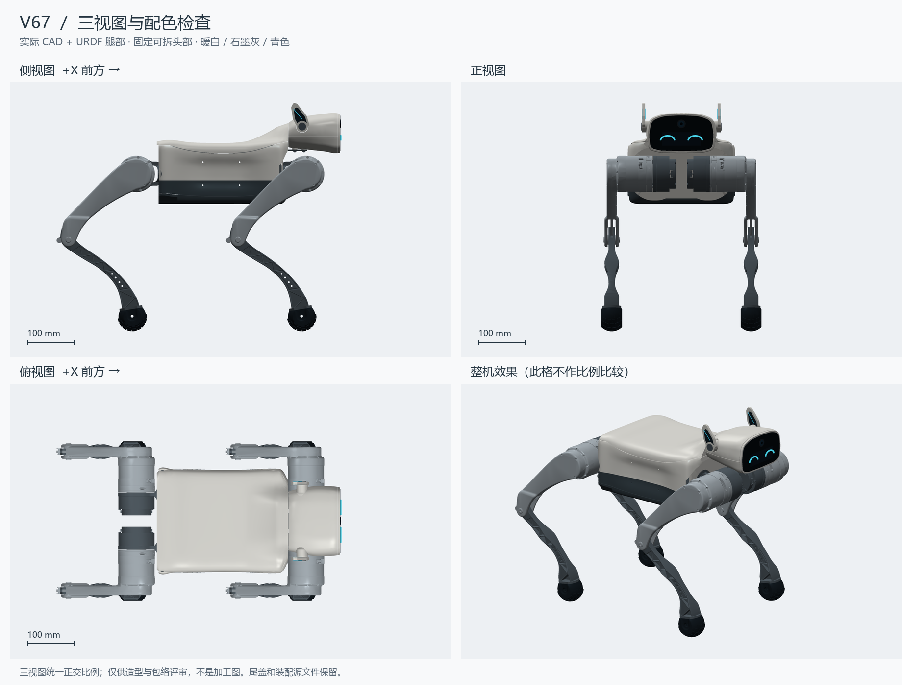
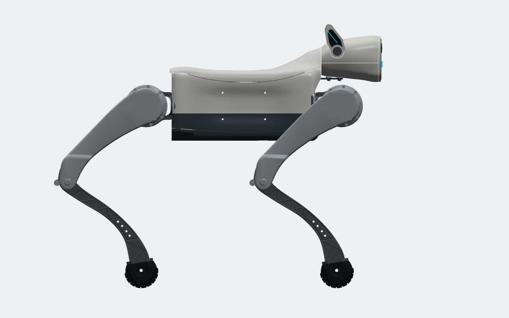
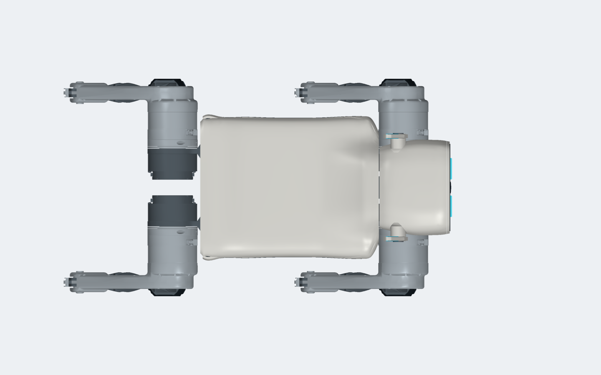
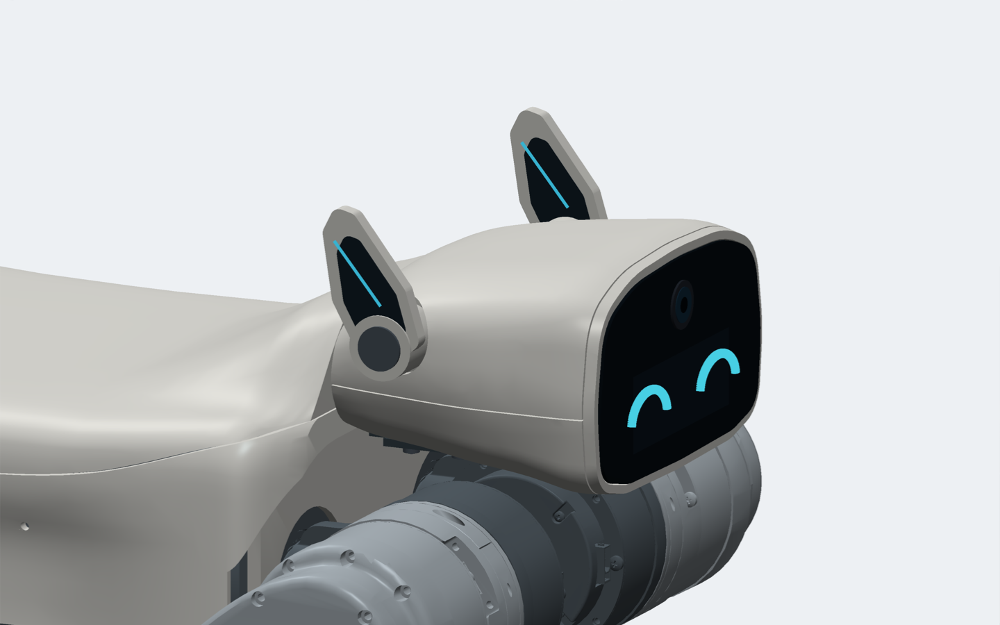
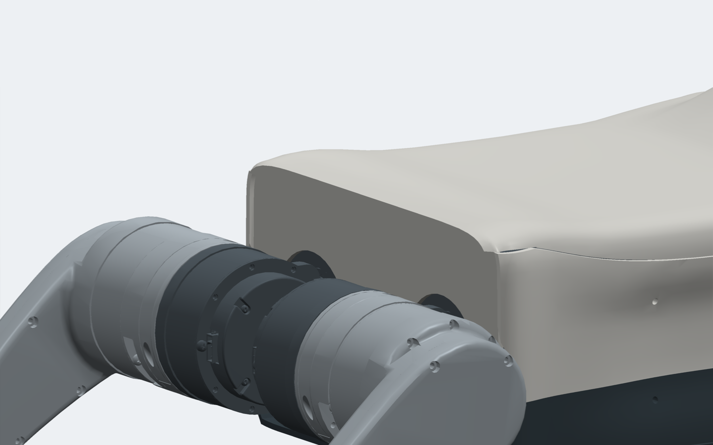
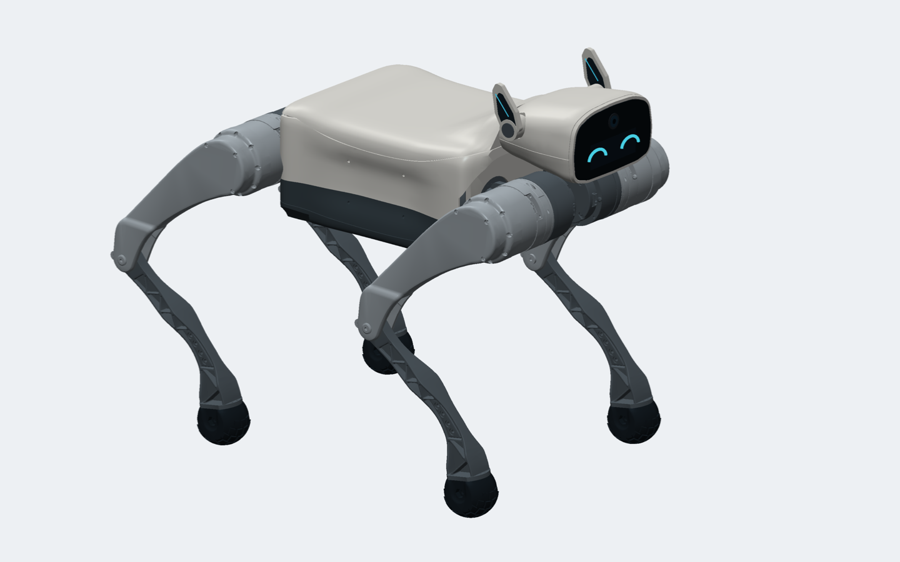
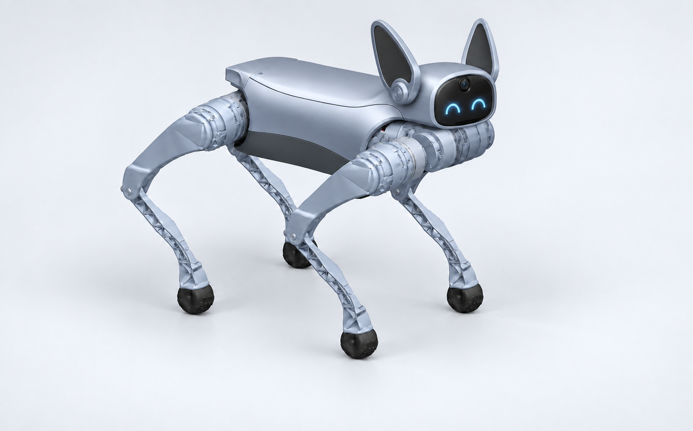

01 / 本轮三视图
尾部横条并入背盖；后脑截面加宽，前肩过渡向机身中部延伸。头部保持固定可拆，脸部、耳轴、安装孔及电机位置保持。

02 / 对比你圈出的断裂位置

侧视：后端不再单独翘出横条，前肩抬升拉长
俯视：取消尾盖横向分缝，加宽后脑连接处03 / 头身连接近景

后脑轮廓控制半宽从 48/42 mm 调整为 66/60 mm（上/下）。头部仍是独立零件；保留 1 mm 轴向拆装缝。这里追求外轮廓连续，但尚未取得严格的相切/曲率连续性认证。
04 / 尾部与整机

尾部和上盖同体成形，后板仍可拆
暖白 / 石墨 / 冷灰配色保持，便于判断形状变化05 / 装配和过程
SolidWorks 装配 · STEP 装配 · 背壳曲面母体 · 头壳曲面母体 · 版本记录
网格及离散腿姿检查 · 安装处原生实体求交 · 完整 V66 页面
回看最初参考图
